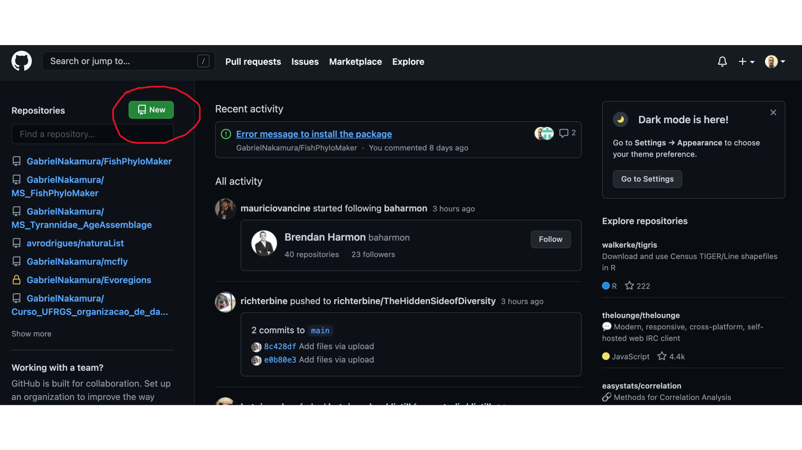
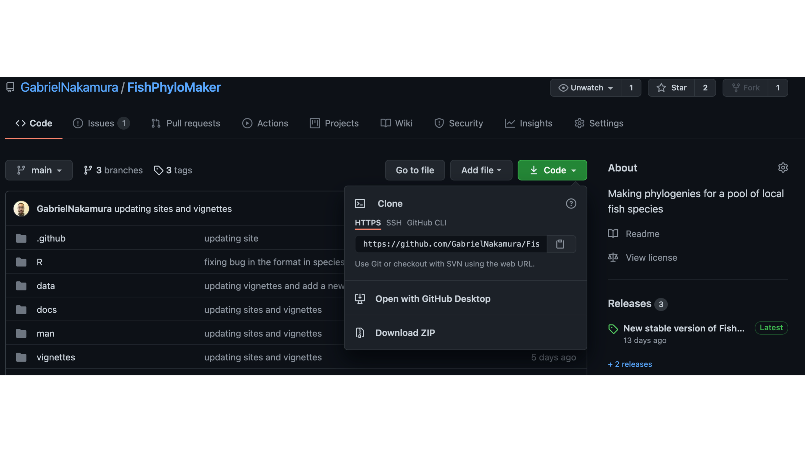
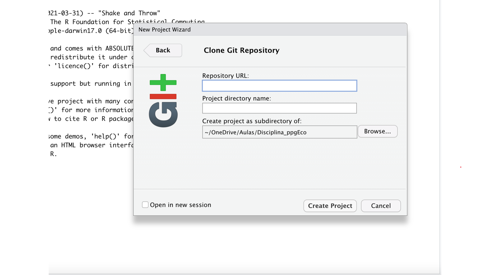
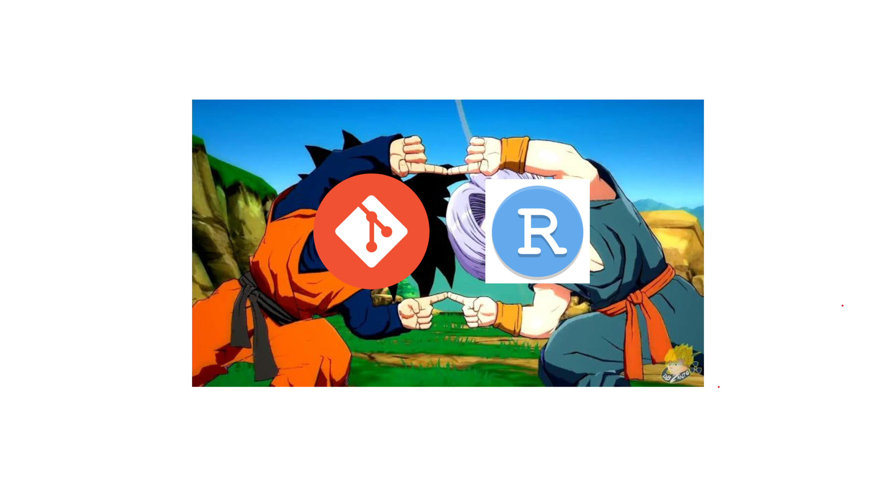

As ferramentas, ou, Hello Git
Gabriel Nakamura
5/15/2021
Nesta primeira seção irei apresentar as principais ferramentas que utilizaremos para nos ajudar na organização de dados. Estas ferramenta irão auxiliar desde a organização local de seus dados até a disponibilização destes dados em plataformas de acesso aberto. Várias delas já devem ser velhas conhecidas por vocês, por exemplo, o RStudio, então dispensam maiores apresentações. Por isso, grande parte deste documento vai tratar de uma ferramenta até bem conhecida pelo nome, mas que pra muita gente pode parecer coisa de outro mundo: o Git. Vocês verão que conhecem mais dele do que imaginam, e que muitas das funções que ele possibilita realizar nós fazemos em nosso dia-a-dia através de outros aplicativos, porém, espero conseguir mostrar o quão o Git é mais eficiente.
Hello Git - Introdução ao uso de sistema de controle de versões
O Git trata-se de um sistema de controle de versões, mas afinal, o que é um sistema de controle de versões? Estamos mais acostumados do que imaginamos quando o assunto é controle de versões, apesar de parecer algo de outro mundo. Um exemplo que todos nós estamos acostumados é oferecido pelo editor de texto Word, quando ligamos a opção “Track changes”. Ao fazermos isso estamos controlando todas as modificações que fazemos em um documento. O Git faz a mesma coisa, porém para uma pasta inteira (ou diretório, na linguagem do controle de versões).
Portanto, o Git nada mais é que um sistema criado para realizar o rastreio de toda e qualquer modificação de arquivos dentro de uma pasta, utilizando a terminologia do versionamento, tudo o que é feito em um diretório associado ao Git é observado (watch na linguagem do versionamento).
Git e GitHub
Git e GitHub são coisas distintas. O GitHub é o GoogleDrive (ou o OneDrive) dos códigos. Ele tem como função armazenar remotamente todos os trabalhos que são feitos localmente com o Git. Porém, com mais potencialidades e controle de armazenamento que as ferramentas do Bill Gates.
Git e Git client
Uma simples analogia para entender a diferença entre um Git client e o Git é a diferença entre R e RStudio. O R é a ferramenta onde os processos são realizados, o RStudio é uma interface específica e amigável para o uso do R. Da mesma forma o Git é a ferramenta que realiza o controle de versão, já o Git client é a interface específica para que o usuário possa interagir de maneira mais amigável com o Git e GitHub. Existem vários Git clients que podemos utilizar para realizar essa interação, por exemplo, o GitKraken e GitLab. Cada um tem suas vantagens e desvantagens.
Neste curso usaremos um Git client que é um velho conhecido nosso, o RStudio. Faremos isso por se tratar da interface mais comum dentro dos estudos de ecologia, a que apresenta uma grande quantidade de materiais disponíveis na internet e também por ser aquela que o instrutor que vos fala tem mais familiaridade.
Integrando Git, GitHub e RStudio
Imagine um sistema que integra o seu programa favorito de análises estatísticas, o seu programa favorito de controle de versões e também o seu repositório remoto favorito. Pois é disso que se trata a integração do Git com o GitHub e RStudio. Tudo (quase tudo) pode ser feito no Git através do uso do RStudio e GitHub. Da mesma forma que tornamos nossos trabalhos locais, ou seja, aqueles que se encontram hospedados em nossos computadores, conectados a um serviço de nuvem para evitar possíveis dores de cabeça (por exemplo a morte do seu computador e perda do trabalho de um mestrado ou doutorado inteiro).
Mãos no teclado - Instalando e configurando o Git
O primeiro passo antes de instalar o Git é saber se você já tem ele instalado em seu computador. Para tanto você deve acessar a linha de comando de seu sistema operacional (bash, prompt, isso vai variar dependendo do tipo de sistema que usa) e digitar o comando:
which gitCaso retorne uma mensagem indicando o local do git no seu computador, ótimo, uma tarefa a menos, caso contrário você terá que instalar o git de acordo com as especificidades do seu sistema operacional que serão apresentadas a seguir.
Instalação do Git no Windows
Instale o Git acessando aqui
Instação do Git no Mac OS
Instale o Git no seu Mac baixando o Xcode command line tools caso você ainda não o tenha. Esta aplicação já vem com o git.
Em seguida configure o git usando a linha de comando seguinte:
git --version
git configVoilá, aceite as configurações e clique em instalar
Instalação do Git no Linux
Digite a seguinte linha de comando caso você tenha Ubuntu ou Debian Linux
sudo apt-get install gitSe tem Fedora ou HatLinux use:
sudo yum install gitConfigurando o git pelo RStudio
Após a instalação do git devemos configurá-lo no nosso computador. Para configurar o Git, ou seja, para que o Git saiba quem está o usando, abra o RStudio e digite:
library(usethis)
use_git_config(user.name = "SeuNomeDeUsuario", user.email = "seuMail@example.br")Lembre de substituir os campos que aparecerão no console do seu R com suas informações.
Uma outra opção é não fazer nada disso, pois em muitos computadores o RStudio já irá reconhecer automaticamente o Git instalado no seu computador, desta maneira, a primeira vez que subir (push) algo para o GitHub você deverá realizar a sua autenticação, assim o Git saberá com quem ele está “falando”.
Neste momento já digo, calma, a maior parte das coisas que faremos nesse curso não necessita da famigerada e temida linha de comando do seu sistema operacional. Em alguns momentos vamos usá-la apenas para nos certificarmos que o Git consegue se comunicar com o GitHub
Conectando Git, RStudio e Github
Para fazer isso você já precisa ter uma conta criada no GitHub e o Git instalado. Tendo sua conta feita vá o seu navegador de internet, acesse o site do GitHub e faça o login. Feito isso:
1 - Crie um repositório
Crie um novo repositório clicando no botão destacado na figura abaixo
 2 - Nomeando e criando o README Selecione a opção Public e Add a README file. Mais para frente iremos entender do que se trata o README e sua importanci, por hora vamos apenas dizer que queremos um arquivo com esse nome no nosso novo repositório.
Escolha um nome para seu repositório.
3 - Clonando
Após criado o repositório vamos clonar ele para a nossa máquina, ou seja, vamos baixá-lo em nosso computador. Para fazer isso basta copiar o endereço https que aparece em destaque na figura abaixo, quando clicamos em Code
 3 - Indicando pro ao Git para onde “olhar” remotamente
Agora vamos abrir o RStudio. Nesse passo iremos informar ao Git via RStudio para onde ele deve olhar remotamente, ou seja, qual a pasta local que deve estar conectada com o repositório remoto. Primeiro selecionamos em “Arquivo” um novo Projeto. Ao abrir uma janela selecionaremos a opção de “Version Control”
RStudio is watching you
Após isso informamos o endereço do repositório remoto (aquele endereço https que copiamos no Github) e colamos ele no campo Repository URL. Automaticamente o campo Project directory name será preechido e você deve apenas escolher o lugar do seu computador que essa pasta será criada.
 Pronto, neste momento a pasta que acabou de ser criada no seu computador está sendo observada pelo Git e hospedada remotamente no GitHub. Qualquer modificação que nela fizer será monitorada. Esse é o resultado da mistura do R + Git + RStudio

Se tudo correu bem, parabéns, agora seu RStudio está conectado ao Git e GitHub, e você está pronto para produzir projetos organizados e reprodutíveis.

Git dictionary
Este glossário visa listar as palavras comumente usadas na linguagem de controle de versão, atribuindo a elas seus respectivos significados em uma linguagem acessível para nós, ecólogos/zoólogos/botânicos, que visamos nos aventurar no mundo do controle de versões
- directory = pasta
- commit = aposto que você já adicionou alguma vez na sua vida a uma versão de seu arquivo a data ou algo do tipo “arquivo_V3_final”. Se sim, você já fez um commit. Fazer um commit é a mesma coisa que comentar as mudanças que foram feitas e adicioná-las ao seu novo arquivo
- clone = o que o próprio nome diz. Clonar o repositório remoto na sua máquina
- pull = baixar dados para (geralmente seu computador)
- push = subir dados para (geralmente para um servidor remoto a.k.a nuvem)
- main ou master = pasta remota
- repository ou reppo = diretório remoto
- watch = monitorar o repositório e cada mudança feita nele
- master = repositório remoto principal
- branch = repositório remoto, pode ser o principal ou repositórios adicionais
- merge = mesclar dois arquivos
- diff = observer a diferença entre dois arquivos
- stage e unstaged = significa selecionar (stage) ou não (unstaged) um arquivo especifico para um commit
Referências básicas
- Happy Git with R - Jenny Bryan
- Git and GitHub for advanced ecological data analysis
- Lista sobre o que fazer quando coisas dão errada no Git
- Tornando o código citável